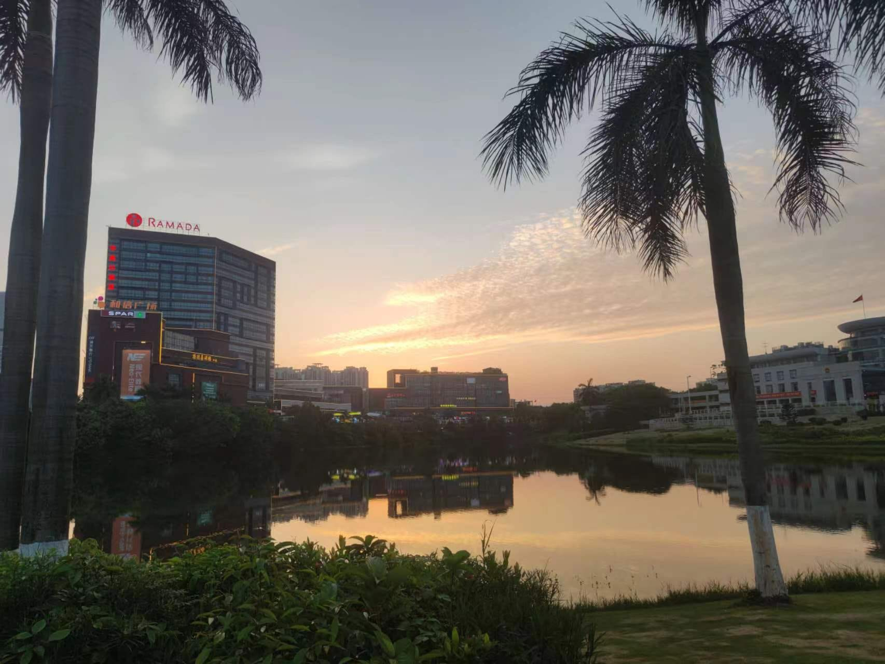

-2023.8.8-
早上跟灵灵去秋子谷子店（天河店）（看fufu），天河时尚广场（一开始来的时候买了早餐，包子，红薯，好特卖买了零食（柠檬水，龟苓膏）（广州购书中心）（看书），中午吃自选（吃草），下午看电影，五一影城（广州四季天地店）看孤注一掷（网络安全，对味了），吃杨国富麻辣烫（赤岗新港中路店）（灵灵爱吃），晚上去永乐坊（看月亮桥）（喝芭乐柠檬茶），到商城里薅羊毛（5.4六瓶柠檬茶），最后回宿舍了送礼物。
早上跟灵灵去秋子谷子店（天河店）（看fufu），天河时尚广场（一开始来的时候买了早餐，包子，红薯，好特卖买了零食（柠檬水，龟苓膏）（广州购书中心）（看书），中午吃自选（吃草），下午看电影，五一影城（广州四季天地店）看孤注一掷（网络安全，对味了），吃杨国富麻辣烫（赤岗新港中路店）（灵灵爱吃），晚上去永乐坊（看月亮桥）（喝芭乐柠檬茶），到商城里薅羊毛（5.4六瓶柠檬茶），最后回宿舍了送礼物。


-2023.8.5-
再逛北京路，找了好久的百家姓
再逛北京路，找了好久的百家姓


-2023.8.2-
灵灵给潘潘买的蓝色玫瑰花
灵灵给潘潘买的蓝色玫瑰花
-2023.7.29-
和灵灵去动漫星城、越秀公园（越秀山）、北京路
和灵灵去动漫星城、越秀公园（越秀山）、北京路


-2023.7.23-
和灵灵去广东华侨博物馆
和灵灵去广东华侨博物馆


-2023.7.15-
和灵灵去电影院看的第一场电影（星汇电影城（天河店））（茶啊二中） 去华南植物园，吃萨莉亚
和灵灵去电影院看的第一场电影（星汇电影城（天河店））（茶啊二中） 去华南植物园，吃萨莉亚


-2023.7.1-
灵灵来南海接我去广州校区
灵灵来南海接我去广州校区
-2023.6.11-
跟灵灵去和信广场玩

跟灵灵去和信广场玩
-2023.6.1-
灵灵送的六一礼物，一头摇摇猪，还有miku贴纸
灵灵送的六一礼物，一头摇摇猪，还有miku贴纸

-2023.5.31-
(太晚了不敢回去)跟灵灵在实验室过了一夜，灵灵：睡不着，我们来亲亲叭(凌晨两三点还在亲亲)(内心暗喜)
(太晚了不敢回去)跟灵灵在实验室过了一夜，灵灵：睡不着，我们来亲亲叭(凌晨两三点还在亲亲)(内心暗喜)

-2023.5.21-
是灵灵送的5.20礼物！玉桂狗和猫猫键帽！！(其实5.15就送了，只是迟迟不舍得拆开用)
是灵灵送的5.20礼物！玉桂狗和猫猫键帽！！(其实5.15就送了，只是迟迟不舍得拆开用)


-2023.5.20-
是和灵灵过的第一个5.20！！！ 两杯菠萝爱情海 一条坠入爱的河 一颗爱灵灵的心
是和灵灵过的第一个5.20！！！ 两杯菠萝爱情海 一条坠入爱的河 一颗爱灵灵的心

-2023.5.19-
(教学楼)
深吻！！！瘫坐在椅子上的灵灵：呃.......没力气了
(教学楼)
深吻！！！瘫坐在椅子上的灵灵：呃.......没力气了

-2023.5.7-
灵灵送的一百天纪念日礼物，是一个蓝色的花灯，里面还有灵灵写的祝福语！！！(100天纪念日是2023.5.4但是因为在家送不了)
灵灵送的一百天纪念日礼物，是一个蓝色的花灯，里面还有灵灵写的祝福语！！！(100天纪念日是2023.5.4但是因为在家送不了)
-2023.4.10-
(图书馆)
不经意间偷偷亲一口我的灵
(图书馆)
不经意间偷偷亲一口我的灵
-2023.2.23-
就这样一直贴贴，一直牵着不松开。
就这样一直贴贴，一直牵着不松开。

-2023.2.17-
五彩斑斓的灯，五彩斑斓的你，都在黑暗中照亮过我
五彩斑斓的灯，五彩斑斓的你，都在黑暗中照亮过我


-2023.2.16-
实验室比心心
实验室比心心
-2023.2.14-
是灵灵，是第一次约会，是我们的第一个情人节！
是灵灵，是第一次约会，是我们的第一个情人节！